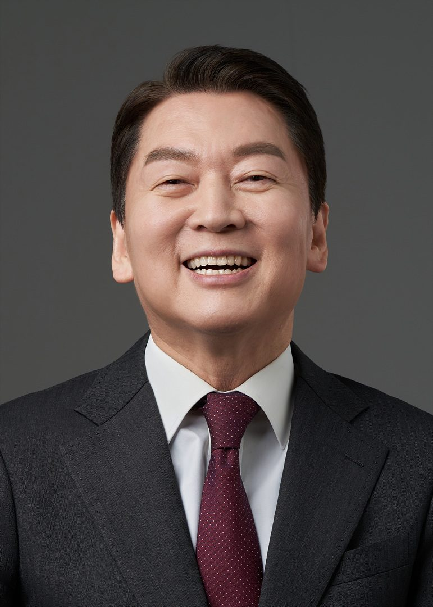

김태호 의원
막말
"짧게 하세요."
전문위원의 공식적인 보고 과정에서 정중한 요청 없이 고압적인 명령조를 사용하여 상대방을 배려하지 않는 무례한 태도를 보임.
| 의원 이름 | 점수 | 코멘트 |
|---|---|---|
| 4.00점 | 발언 횟수는 적으나, 상대방에게 고압적인 말투를 사용하여 회의의 품격을 저해함. | |
| 3.36점 | 논리적인 지적을 했으나, 상대 위원을 비하하는 비유적 표현을 사용하여 공격적인 태도를 보임. | |
| 3.03점 | 사업 내용에 없는 사항을 근거로 부대의견을 강요하는 등 다소 억지스러운 주장을 반복함. | |
| 2.42점 | 정치적 신념에 따라 강한 어조로 비판했으나, 전반적으로 논리적인 근거를 바탕으로 의견을 개진함. | |
| 1.00점 | 교육생 수 대비 운영비라는 구체적인 효율성 지표를 통해 시설 운영의 문제점을 정확히 짚어냄. | |
| 1.00점 | 소위원장으로서 갈등을 중재하고 효율적인 합의점을 찾기 위해 노력하며 품격 있게 회의를 진행함. | |
|
 |
1.00점 | 예산 집행의 효율성과 투명성을 강조하며 논리적이고 품격 있게 발언함. |
| 1.00점 | 실제 사례(신압록강대교)를 들어 위성정보 활용의 실질적인 효용성을 입증하며 의견을 개진함. | |
| 1.00점 | 여야의 입장을 모두 고려하여 현실적이고 합리적인 중재안을 제시함. | |
| 1.00점 | 헌법적 가치와 현실적 인식을 구분하여 합리적인 중재안과 대안을 제시함. |
막말
전문위원의 공식적인 보고 과정에서 정중한 요청 없이 고압적인 명령조를 사용하여 상대방을 배려하지 않는 무례한 태도를 보임.
궤변
정부 제출 사업 내용에 '두 국가론'과 관련된 언급이 전혀 없음에도 불구하고, 이를 가정하여 부대의견을 넣으려는 억지 주장을 지속함.
막말
상대 의원의 주장을 '섀도복싱'에 비유하며, 실체 없는 허상과 싸우고 있다고 비하하는 표현을 사용함.